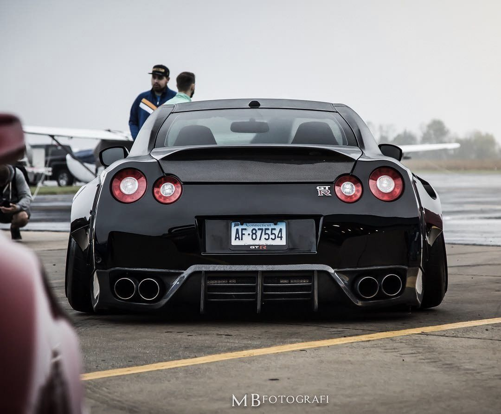

Nissan GT-R R34 Skyline foi a versão considerada dominante, sendo produzida de 1999 à 2002. Nesse período, a versão base teve atualizações tecnológicas que tornaram o Godzilla mais agressivo e também mais caro. A princípio o motor twin turbo com 6 cilindros em linha entregava 276 cavalos de potência com AWD full-time. Um display multifuncional em LCD exibia as informações do motor bem a frente do motorista. O apogeu do Skyline R34 se demonstrou na versão preparada para o uso do ator Paul Walker, que interpretou o agente Brian O´Conner, em Velozes e Furiosos 4 (2009). O GT-R Skyline utilizado no filme estava equipado com o motor 2.6 twin-turbo de seis cilindros a gasolina, capaz de gerar 550 cv de potência, gerenciado por um câmbio manual de seis marchas, com tração nas quatro rodas (4WD).
É importante mencionar que em 2001, uma nova geração do Skyline surpreendia com um motor V6. O tradicional nome das sequências foi rompido, sendo essa versão do Skyline nomeada para V35. A ideia porém era um carro muito mais luxuoso que esportivo, que não teve a aceitação no mercado e mídia tal como as versões anteriores. Em outubro de 2001, a Nissan apresenta o GT-R concept no Salão de Tóquio. Nele as características esportivas eram ressaltadas, o que animou o púbico que não tinha aceitado as mudanças do Skyline V35, nas quais, por exemplo, faltavam as características clássicas, como as lanternas redondas na traseira, entre inúmeras outras. Em outubro de 2005, novamente no Salão de Tóquio, um protótipo vem trazer mais luz sobre a nova versão do superesportivo, agora em vias da concretização. Com as características clássicas que lhe trouxe o nome de R35, porém altamente inovador, o Godzilla surge mais uma vez, sendo apresentado no Salão de Tóquio em 2007. A grande inovação certamente foi o motor V6 biturbo de 3,8 litros, com 3800 cc, capaz de entregar a potência de 492 cv a 6.400 rpm. O superesportivo então era capaz de chegar a 100 km/h em 3,2 segundos. O GT-R nunca parou de evoluir. Em 2011, o R35 era atualizado com mudanças que elevaram sua potência para 537 cavalos. Na versão 2014, o GT-R passou a contar com 552 cavalos de potência. Agora a nova versão do GT-R 2017 conta com 572 cavalos a 6800 rpm e chega ao Brasil. A análise do surgimento do GT-R desde seu passado mais remoto demonstra o caminho que a Nissan percorreu para inserir o Godzilla no mercado mundial. O GT-R se consagrou nos games, especialmente nas versões de Need for Speed, no cinema, com Velozes e Furiosos, infiltrando-se assim no desejo do público que almeja carros super esportivos.
